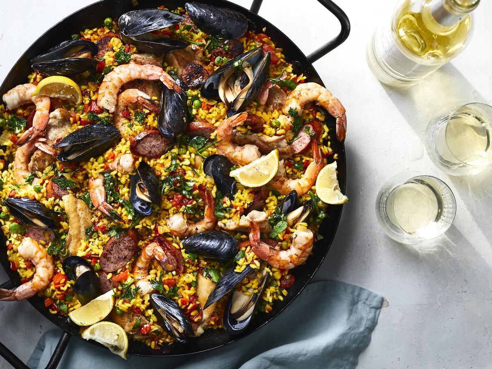
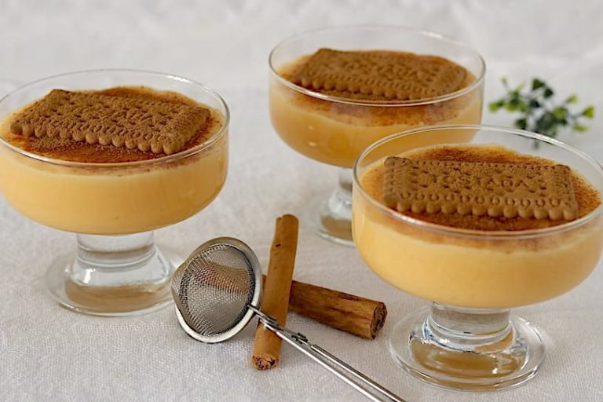

=======
Step 1 To prepare the herb blend, combine the first 4 ingredients, and set aside.
Step 2 To prepare paella, combine water, saffron, and broth in a large saucepan. Bring to a simmer (do not boil). Keep warm over low heat. Peel and devein shrimp, leaving tails intact; set aside.
Step 3 Heat 1 tablespoon oil in a large paella pan or large skillet over medium-high heat. Add chicken; saute 2 minutes on each side. Remove from pan. Add sausage and prosciutto; saute 2 minutes. Remove from pan. Add shrimp, and saute 2 minutes. Remove from pan. Reduce heat to medium-low. Add onion and bell pepper; saute 15 minutes, stirring occasionally. Add tomatoes, paprika, and 3 garlic cloves; cook 5 minutes. Add rice; cook 1 minute, stirring constantly. Stir in herb blend, broth mixture, chicken, sausage mixture, and peas. Bring to a low boil; cook 10 minutes, stirring frequently. Add mussels to pan, nestling them into rice mixture. Cook 5 minutes or until shells open; discard any unopened shells. Arrange shrimp, heads down, in rice mixture, and cook 5 minutes or until shrimp are done. Sprinkle with 1/4 cup lemon juice. Remove from heat; cover with a towel, and let stand 10 minutes. Serve with lemon wedges, if desired. side dishes
 >>>>>>> c35e6fb1941c54b43474bbe336e13f1258c51c5f
Traditional Spanish Paella
>>>>>>> c35e6fb1941c54b43474bbe336e13f1258c51c5f
Traditional Spanish Paella

- Herb Blend:
- 1 cup chopped fresh parsley
- 1/4 cup fresh lemon juice
- 1 tablespoon olive oil
- 2 large garlic cloves, minced
- 1 cup water
- 1 teaspoon saffron threads
- 3 (16-ounce) cans fat-free, less-sodium chicken broth
- 8 unpeeled jumbo shrimp (about 1/2 pound)
- 1 tablespoon olive oil
- 4 skinned, boned chicken thighs, cut in half
- 2 links Spanish chorizo sausage (about 6 1/2 ounces) or turkey kielbasa, cut into 1/2-inch-thick slices
- 1 (4-ounce) slice prosciutto or 33%-less-sodium ham, cut into 1-inch pieces
- 2 cups finely chopped onion
- 1 cup finely chopped red bell pepper 1 cup canned diced tomatoes, undrained
- 1 teaspoon sweet paprika 3 large garlic cloves, minced
- 3 cups uncooked Arborio rice or other short-grain rice
- 1 cup frozen green peas 8 mussels, scrubbed and debearded
- 1/4 cup fresh lemon juice
- Lemon wedges (optional)
Paella:
Step 1 To prepare the herb blend, combine the first 4 ingredients, and set aside.
Step 2 To prepare paella, combine water, saffron, and broth in a large saucepan. Bring to a simmer (do not boil). Keep warm over low heat. Peel and devein shrimp, leaving tails intact; set aside.
Step 3 Heat 1 tablespoon oil in a large paella pan or large skillet over medium-high heat. Add chicken; saute 2 minutes on each side. Remove from pan. Add sausage and prosciutto; saute 2 minutes. Remove from pan. Add shrimp, and saute 2 minutes. Remove from pan. Reduce heat to medium-low. Add onion and bell pepper; saute 15 minutes, stirring occasionally. Add tomatoes, paprika, and 3 garlic cloves; cook 5 minutes. Add rice; cook 1 minute, stirring constantly. Stir in herb blend, broth mixture, chicken, sausage mixture, and peas. Bring to a low boil; cook 10 minutes, stirring frequently. Add mussels to pan, nestling them into rice mixture. Cook 5 minutes or until shells open; discard any unopened shells. Arrange shrimp, heads down, in rice mixture, and cook 5 minutes or until shrimp are done. Sprinkle with 1/4 cup lemon juice. Remove from heat; cover with a towel, and let stand 10 minutes. Serve with lemon wedges, if desired. side dishes
 dessert
dessert

recipe 2
side dishes
dessert